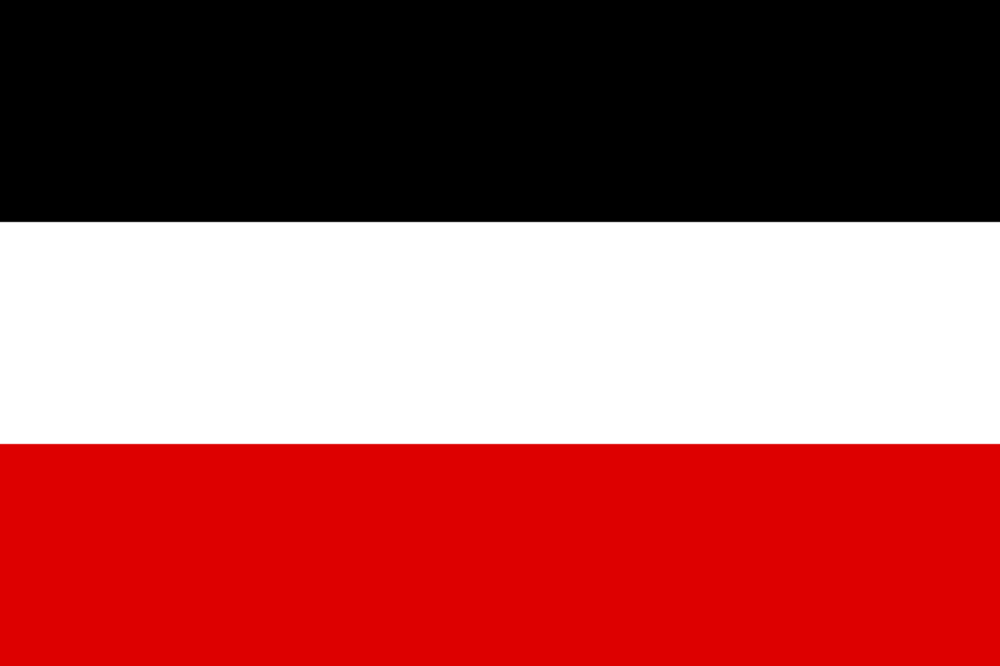

North German Confederation
1866–1871
The North German Confederation (German: Norddeutscher Bund)[1] was the German federal state which existed from July 1867 to December 1870. The Confederation came into existence after the Austro-Prussian War of 1866 over the lordship of two small danish duchies (Schleswig-Holstein) claimed by Prussia in 1866. Although de jure a confederacy of equal states, the Confederation was de facto controlled and led by the largest and most powerful member, Prussia, which exercised its influence to bring about the formation of the German Empire. Some historians also use the name for the alliance of 22 German states formed on 18 August 1866 (Augustbündnis).
The growing power of Prussia was worrying other great powers, especially France, French Emperor Napoleon III and his regime, the Second French Empire. In 1868, Spain overthrew queen Isabella II, and a German prince was a candidate for her throne. France, not wanting to be encircled by a German-Spanish alliance, declared war on the Confederation. In 1870–1871, the south German states of Baden, Hesse-Darmstadt, Württemberg and Bavaria joined the country. On 1 January 1871, the country adopted a new constitution, which was written under the title of a new "German Confederation" but already gave it the name "German Empire" in the preamble and article 11.
The constitution established a constitutional monarchy with the Prussian king as the bearer of the Bundespräsidium, or head of state. Laws could only be enabled with the consent of the Reichstag (a parliament based on universal male suffrage) and the Federal Council (a representation of the states). During the four years of the Confederation, a conservative-liberal cooperation undertook important steps to unify (Northern) Germany with regard to law and infrastructure. The political system (and the political parties) remained essentially the same in the years after 1870.
The Confederation had nearly 30 million inhabitants, of whom eighty percent lived in Prussia.
Political system
The North German Constitution of 16 April 1867 created a national parliament with universal suffrage (for men above the age of 25), the Reichstag. Another important organ was the Bundesrat, the 'federal council' of the representatives of the allied governments. To adopt a law, a majority in the Reichstag and in the Bundesrat was necessary. This gave the allied governments, meaning the states and their princes, an important veto.
Executive power was vested in a president, a hereditary office of the House of Hohenzollern, the ruling family of Prussia. He was assisted by a chancellor responsible only to him – an office that Bismarck designed with himself in mind. There was no formal cabinet; the heads of the departments were not called ministers but secretaries. Those were installed and dismissed by the chancellor.
For all intents and purposes, the confederation was dominated by Prussia. It had four-fifths of the confederation's territory and population – more than the other 21 members combined. The presidency was a hereditary office of the Prussian crown. Bismarck was also foreign minister of Prussia, a post he held for virtually his entire career. In that role he instructed the Prussian deputies to the Bundesrat. Prussia had 17 of 43 votes in the Bundesrat despite being by far the largest state, but could easily get a majority by making alliances with the smaller states.
History
Prussia's plans to unify Germany
For most of 1815–1848, Austria and Prussia worked together and used the German Confederation as a tool to suppress liberal and national ambitions in the German population. In 1849, the National Assembly in Frankfurt elected the Prussian king as the Emperor of a Lesser Germany (a Germany without Austria). The king refused and tried to unite Germany with the Erfurt Union of 1849–1850. When the union parliament met in early 1850 to discuss the constitution, the participating states were mainly only those in Northern and Central Germany. Austria and the southern German states Württemberg and Bavaria forced Prussia to give up its union plans in late 1850.
In April and June 1866, Prussia proposed a Lesser Germany again. Corner stone of the proposal was the election of a German parliament based on universal male suffrage.[3] The proposal even explicitly mentioned the Frankfurt election law of 1849. Otto von Bismarck, the minister-president of Prussia, wanted to gain sympathy within the national and liberal movement of the time. Austria and its allies refused the proposal. In summer 1866 Austria and Prussia fought with their respective allies in the Austro-Prussian War.
North German Confederation
Norddeutscher Bund
1866–1871
Germany: 1867–1871
Flag of North German Confederation
| Capital | Berlin |
|---|
Geographics
| Area | 415,150 km2 |
|---|---|
| Time Zones | UTC+1 |
Map of North German Confederation
Demographics
| Population | ~30,000,000 |
|---|---|
| Religion | Protestantism |
| Languages |
|
| Currency | Vereinsthaler |
Politics
| Goverment | Confederal constitutional monarchy |
|---|---|
| President, Chancellor |
|